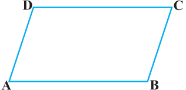
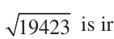
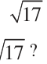
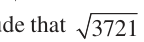
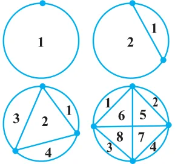
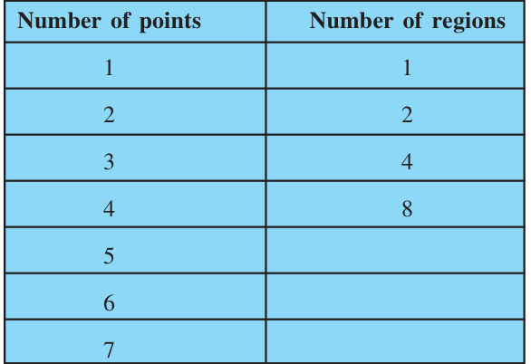
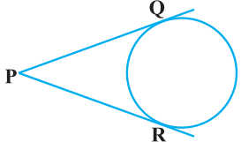
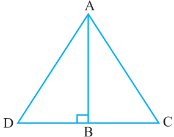
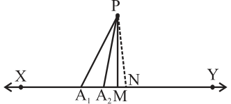

PROOFS IN MATHEMATICS
A1.1 Introduction
The ability to reason and think clearly is extremely useful in our daily life. For example, suppose a politician tells you, ‘If you are interested in a clean government, then you should vote for me.’ What he actually wants you to believe is that if you do not vote for him, then you may not get a clean government. Similarly, if an advertisement tells you, ‘The intelligent wear XYZ shoes’, what the company wants you to conclude is that if you do not wear XYZ shoes, then you are not intelligent enough. You can yourself observe that both the above statements may mislead the general public. So, if we understand the process of reasoning correctly, we do not fall into such traps unknowingly. The correct use of reasoning is at the core of mathematics, especially in constructing proofs. In Class IX, you were introduced to the idea of proofs, and you actually proved many statements, especially in geometry. Recall that a proof is made up of several mathematical statements, each of which is logically deduced from a previous statement in the proof, or from a theorem proved earlier, or an axiom, or the hypotheses. The main tool, we use in constructing a proof, is the process of deductive reasoning. We start the study of this chapter with a review of what a mathematical statement is. Then, we proceed to sharpen our skills in deductive reasoning using several examples. We shall also deal with the concept of negation and finding the negation of a given statement. Then, we discuss what it means to find the converse of a given statement. Finally, we review the ingredients of a proof learnt in Class IX by analysing the proofs of several theorems. Here, we also discuss the idea of proof by contradiction, which you have come across in Class IX and many other chapters of this book.
A1.2 Mathematical Statements Revisited
Recall, that a ‘statement’ is a meaningful sentence which is not an order, or an exclamation or a question. For example, ‘Which two teams are playing in the
Cricket World Cup Final?’ is a question, not a statement. ‘Go and finish your homework’ is an order, not a statement. ‘What a fantastic goal!’ is an exclamation, not a statement.
Remember, in general, statements can be one of the following:
- •always true
- •always false
- •ambiguous
In Class IX, you have also studied that in mathematics, a statement is acceptable only if it is either always true or always false. So, ambiguous sentences are not considered as mathematical statements. Let us review our understanding with a few examples.
Example 1 : State whether the following statements are always true, always false or ambiguous. Justify your answers.
- (i)The Sun orbits the Earth.
- (ii)Vehicles have four wheels.
- (iii)The speed of light is approximately \(3 \times 10^{5}\) km/s.
- (iv)A road to Kolkata will be closed from November to March.
- (v)All humans are mortal.
Solution :
- (i)This statement is always false, since astronomers have established that the Earth
orbits the Sun.
- (ii)This statement is ambiguous, because we cannot decide if it is always true or
always false. This depends on what the vehicle is - vehicles can have 2, 3, 4, 6, 10, etc., wheels.
- (iii)This statement is always true, as verified by physicists.
- (iv)This statement is ambiguous, because it is not clear which road is being referred
to.
- (v)This statement is always true, since every human being has to die some time.
Example 2 : State whether the following statements are true or false, and justify your answers.
- (i)All equilateral triangles are isosceles.
- (ii)Some isosceles triangles are equilateral.
- (iii)All isosceles triangles are equilateral.
- (iv)Some rational numbers are integers.
- (v)Some rational numbers are not integers.
- (vi)Not all integers are rational.
- (vii)Between any two rational numbers there is no rational number.
Solution :
- (i)This statement is true, because equilateral triangles have equal sides, and therefore
are isosceles.
- (ii)This statement is true, because those isosceles triangles whose base angles are
\(60 ^{\circ}\) are equilateral.
- (iii)This statement is false. Give a counter-example for it.
- (iv)This statement is true, since rational numbers of the form \(\frac{p}{q}\) , where p is an
integer and \(q = 1\), are integers (for example, \(3 = \frac{3}{1}\) ).
- (v)This statement is true, because rational numbers of the form \(\frac{p}{q}\) , p, q are integers
and q does not divide p, are not integers (for example, \(\frac{3}{2}\) ).
- (vi)This statement is the same as saying ‘there is an integer which is not a rational
number’. This is false, because all integers are rational numbers.
- (vii)This statement is false. As you know, between any two rational numbers r and s
lies \(\frac{r+s}{2}\) , which is a rational number.
Example 3 : If x < 4 , which of the following statements are true? Justify your answers.
- (i) 2x > 8 (ii) 2x < 6 (iii) 2x < 8
Solution :
- (i)This statement is false, because, for example, x = 3 < 4 does not satisfy 2x > 8 .
- (ii)This statement is false, because, for example, x = 3.5 < 4 does not satisfy 2x < 6 .
- (iii)This statement is true, because it is the same as x < 4 .
Example 4 : Restate the following statements with appropriate conditions, so that they become true statements:
- (i)If the diagonals of a quadrilateral are equal, then it is a rectangle.
- (ii)A line joining two points on two sides of a triangle is parallel to the third side.
- (iii)p is irrational for all positive integers p.
- (iv)All quadratic equations have two real roots.
Solution :
- (i)If the diagonals of a parallelogram are equal, then it is a rectangle.
- (ii)A line joining the mid-points of two sides of a triangle is parallel to the third side.
- (iii)p is irrational for all primes p.
- (iv)All quadratic equations have at most two real roots.
Remark : There can be other ways of restating the statements above. For instance,
- (iii)can also be restated as ‘ p is irrational for all positive integers p which are not a
perfect square’.
EXERCISE A1.1
- 1.State whether the following statements are always true, always false or ambiguous.
Justify your answers.
- (i)All mathematics textbooks are interesting.
- (ii)The distance from the Earth to the Sun is approximately \(1.5 \times 10\) km.
- (iii)All human beings grow old.
- (iv)The journey from Uttarkashi to Harsil is tiring.
- (v)The woman saw an elephant through a pair of binoculars.
- 2.State whether the following statements are true or false. Justify your answers.
- (i)All hexagons are polygons. (ii) Some polygons are pentagons.
- (iii)Not all even numbers are divisible by 2. (iv) Some real numbers are irrational.
- (v)Not all real numbers are rational.
- 3.Let a and b be real numbers such that ab \(\ne 0\). Then which of the following statements are
true? Justify your answers.
- (i)Both a and b must be zero. (ii) Both a and b must be non-zero.
- (iii)Either a or b must be non-zero.
- 4.Restate the following statements with appropriate conditions, so that they become true.
- (i)If a > b , then a > b . (ii) If \(x = y\) , then \(x = y\).
- (iii)If (x + y) \(= x + y\) , then \(x = 0\). (iv) The diagonals of a quadrilateral
A1.3 Deductive Reasoning
In Class IX, you were introduced to the idea of deductive reasoning. Here, we will work with many more examples which will illustrate how deductive reasoning is
used to deduce conclusions from given statements that we assume to be true. The given statements are called ‘premises’ or ‘hypotheses’. We begin with some examples.
Example 5 : Given that Bijapur is in the state of Karnataka, and suppose Shabana lives in Bijapur. In which state does Shabana live?
Solution : Here we have two premises:
- (i)Bijapur is in the state of Karnataka (ii) Shabana lives in Bijapur
From these premises, we deduce that Shabana lives in the state of Karnataka.
Example 6 : Given that all mathematics textbooks are interesting, and suppose you are reading a mathematics textbook. What can we conclude about the textbook you are reading?
Solution : Using the two premises (or hypotheses), we can deduce that you are reading an interesting textbook.
Example 7 : Given that \(y = - 6x + 5\), and suppose \(x = 3\). What is y? Solution : Given the two hypotheses, we get \(y = - 6 (3) + 5 = - 13\).
Example 8 : Given that ABCD is a parallelogram, and suppose \(AD = 5\) cm, \(AB = 7\) cm (see Fig. A1.1). What can you conclude about the lengths of DC and BC?

Solution : We are given that ABCD is a parallelogram. So, we deduce that all the properties that hold for a Fig. A1.1 parallelogram hold for ABCD. Therefore, in particular, the property that ‘the opposite sides of a parallelogram are equal to each other’, holds. Since we know \(AD = 5\) cm, we can deduce that \(BC = 5\) cm. Similarly, we deduce that
\(DC = 7\) cm.
Remark : In this example, we have seen how we will often need to find out and use properties hidden in a given premise.
Example 9 : Given that p is irrational for all primes p, and suppose that 19423 is a prime. What can you conclude about ?

Solution : We can conclude that is irrational.
In the examples above, you might have noticed that we do not know whether the hypotheses are true or not. We are assuming that they are true, and then applying deductive reasoning. For instance, in Example 9, we haven’t checked whether 19423
is a prime or not; we assume it to be a prime for the sake of our argument.What we are trying to emphasise in this section is that given a particular statement, how we use deductive reasoning to arrive at a conclusion. What really matters here is that we use the correct process of reasoning, and this process of reasoning does not depend on the trueness or falsity of the hypotheses. However, it must also be noted that if we start with an incorrect premise (or hypothesis), we may arrive at a wrong conclusion.
EXERCISE A1.2
- 1.Given that all women are mortal, and suppose that A is a woman, what can we conclude
about A?
- 2.Given that the product of two rational numbers is rational, and suppose a and b are
rationals, what can you conclude about ab?
- 3.Given that the decimal expansion of irrational numbers is non-terminating, non-recurring,
and is irrational, what can we conclude about the decimal expansion

of
- 4.Given that \(y = x + 6\) and \(x = - 1\), what can we conclude about the value of y?
- 5.Given that ABCD is a parallelogram and \(\angle B = 80 ^{\circ}\) . What can you conclude about the
other angles of the parallelogram?
- 6.Given that PQRS is a cyclic quadrilateral and also its diagonals bisect each other. What
can you conclude about the quadrilateral?
- 7.Given that is irrational for all primes p and also suppose that 3721 is a prime. Can

you conclude that is an irrational number? Is your conclusion correct? Why or why not?
A1.4 Conjectures, Theorems, Proofs and Mathematical Reasoning
Consider the Fig. A1.2. The first circle has one point on it, the second two points, the third three, and so on. All possible lines connecting the points are drawn in each case. The lines divide the circle into mutually exclusive regions (having no common portion). We can count these and tabulate our results as shown : Fig. A1.2


Some of you might have come up with a formula predicting the number of regions given the number of points. From Class IX, you may remember that this intelligent guess is called a ‘conjecture’. Suppose your conjecture is that given ‘n’ points on a circle, there are \(2^{n} - 1\) mutually exclusive regions, created by joining the points with all possible lines. This seems an extremely sensible guess, and one can check that if \(n = 5\), we do get 16 regions. So, having verified this formula for 5 points, are you satisfied that for any n points there are \(2^{n} - 1\) regions? If so, how would you respond, if someone asked you, how you can be sure about this for \(n = 25\), say? To deal with such questions, you would need a proof which shows beyond doubt that this result is true, or a counter- example to show that this result fails for some ‘n’. Actually, if you are patient and try it out for \(n = 6\), you will find that there are 31 regions, and for \(n = 7\) there are 57 regions. So, \(n = 6\), is a counter-example to the conjecture above. This demonstrates the power of a counter-example. You may recall that in the Class IX we discussed that to disprove a statement, it is enough to come up with a single counter- example. You may have noticed that we insisted on a proof regarding the number of regions in spite of verifying the result for \(n = 1\), 2, 3, 4 and 5. Let us consider a few more examples. You are familiar with the following result (given in Chapter 5): \(1 + 2 + 3 +\) ... \(+ n = \frac{n(n +1)}{2}\) . To establish its validity, it is not enough to verify the result for \(n = 1\), 2, 3, and so on, because there may be some ‘n’ for which this result is not true (just as in the example above, the result failed for \(n = 6)\). What we need is a proof which establishes its truth beyond doubt. You shall learn a proof for the same in higher classes.
Now, consider Fig. A1.3, where PQ and PR are tangents to the circle drawn from P. You have proved that \(PQ = PR\) (Theorem 10.2). You were not satisfied by only drawing several such figures, measuring the lengths of the respective tangents, and verifying for yourselves that the result was true in each case. Fig. A1.3 Do you remember what did the proof consist of ? It consisted of a sequence of statements (called valid arguments), each following from the earlier statements in the proof, or from previously proved (and known) results independent from the result to be proved, or from axioms, or from definitions, or from the assumptions you had made. And you concluded your proof with the statement \(PQ = PR\), i.e., the statement you wanted to prove. This is the way any proof is constructed. We shall now look at some examples and theorems and analyse their proofs to help us in getting a better understanding of how they are constructed. We begin by using the so-called ‘direct’ or ‘deductive’ method of proof. In this method, we make several statements. Each is based on previous statements. If each statement is logically correct (i.e., a valid argument), it leads to a logically correct conclusion.

Example 10 : The sum of two rational numbers is a rational number.
Solution :
S.No. Statements Analysis/Comments
- 1.Let x and y be rational numbers. Since the result is about
- 2.Let \(x = \frac{m}{n}\) , \(n \ne 0\) and \(y = \frac{p}{q}\) , \(q \ne 0\) Apply the definition of
where m, n, p and q are integers.
- 3.So, \(x + y = \frac{m}{n} + \frac{p}{q} = \frac{mq+np}{nq}\) The result talks about thesum of rationals, so we look
- 4.Using the properties of integers, we see Using known properties of
that mq + np and nq are integers. integers.
- 5.Since \(n \ne 0\) and \(q \ne 0\), it follows that Using known properties of
nq \(\ne 0\). integers.
- 6.Therefore, number \(x + y = \frac{mq+np}{nq}\) is a rational rational number.Using the definition of a
Remark : Note that, each statement in the proof above is based on a previously established fact, or definition.
Example 11 : Every prime number greater than 3 is of the form \(6k + 1\) or \(6k + 5\), where k is some integer.
Solution :
S.No. Statements Analysis/Comments
- 1.Let p be a prime number greater than 3. Since the result has to do
- 2.Dividing p by 6, we find that p can be of Using Euclid’s
the form 6k, \(6k + 1\), \(6k + 2\), division lemma.
\(6k + 3\), \(6k + 4\), or \(6k + 5\), where k is
an integer.
- 3.But \(6k = 2(3k)\), \(6k + 2 = 2(3k + 1)\), We now analyse the
\(6k + 4 = 2(3k + 2)\), remainders given that and \(6k + 3 = 3(2k + 1)\). So, they are p is prime. not primes.
- 4.So, p is forced to be of the We arrive at this conclusion
form \(6k + 1\) or \(6k + 5\), for some having eliminated the other integer k. options.
Remark : In the above example, we have arrived at the conclusion by eliminating different options. This method is sometimes referred to as the Proof by Exhaustion.

Theorem A1.1 (Converse of the
Pythagoras Theorem) : If in a triangle the square of the length of one side is equal to the sum of the squares of the other two sides, then the angle opposite the first side is a right angle.
Proof : Fig. A1.4 S.No. Statements Analysis
- 1.Let \(\triangle ABC\) satisfy the hypothesis Since we are proving a
\(AC^{2} = AB^{2} + BC^{2}\). statement about such a triangle, we begin by taking this.
- 2.Construct line BD perpendicular to This is the intuitive step we
AB, such that \(BD = BC\), and join A to D. have talked about that we often need to take for proving theorems.
- 3.By construction, \(\triangle ABD\) is a right We use the Pythagoras
triangle, and from the Pythagoras theorem, which is already Theorem, we have \(AD^{2} = AB^{2} + BD^{2}\). proved.
- 4.By construction, \(BD = BC\). Therefore, Logical deduction.
we have \(AD^{2} = AB^{2} + BC^{2}\).
- 5.Therefore, \(AC^{2} = AB^{2} + BC^{2} = AD^{2}\). Using assumption, and
- 6.Since AC and AD are positive, we Using known property of
have \(AC = AD\). numbers.
- 7.We have just shown \(AC = AD\). Also Using known theorem.
\(BC = BD\) by construction, and AB is common. Therefore, by SSS, \(\triangle ABC \cong \triangle ABD\).
- 8.Since \(\triangle ABC \cong \triangle ABD\), we get Logical deduction, based on
\(\angle ABC = \angle ABD\), which is a right angle. previously established fact.
Remark : Each of the results above has been proved by a sequence of steps, all linked together. Their order is important. Each step in the proof follows from previous steps and earlier known results. (Also see Theorem 6.9.)
EXERCISE A1.3
In each of the following questions, we ask you to prove a statement. List all the steps in each proof, and give the reason for each step.
- 1.Prove that the sum of two consecutive odd numbers is divisible by 4.
- 2.Take two consecutive odd numbers. Find the sum of their squares, and then add 6 to the
result. Prove that the new number is always divisible by 8.
- 3.If \(p \ge 5\) is a prime number, show that \(p + 2\) is divisible by 3.
[Hint: Use Example 11].
- 4.Let x and y be rational numbers. Show that xy is a rational number.
- 5.If a and b are positive integers, then you know that \(a =\) bq \(+ r\), 0 ≤ r < b , where q is a whole
number. Prove that HCF (a, b) \(= HCF\) (b, r). [Hint : Let HCF (b, r) \(= h\). So, \(b = k_{1}h\) and \(r = k_{2}h\), where k_{1} and k_{2} are coprime.]
- 6.A line parallel to side BC of a triangle ABC, intersects AB and AC at D and E respectively.
\(\frac{AD}{DB} \frac{AE}{EC}\)
Prove that \(= \cdot\)
A1.5 Negation of a Statement
In this section, we discuss what it means to ‘negate’ a statement. Before we start, we would like to introduce some notation, which will make it easy for us to understand these concepts. To start with, let us look at a statement as a single unit, and give it a name. For example, we can denote the statement ‘It rained in Delhi on 1 September 2005’ by p. We can also write this by
p: It rained in Delhi on 1 September 2005.
Similarly, let us write
q: All teachers are female.
r: Mike’s dog has a black tail.
s: \(2 + 2 = 4\).
t: Triangle ABC is equilateral.
This notation now helps us to discuss properties of statements, and also to see how we can combine them. In the beginning we will be working with what we call ‘simple’ statements, and will then move onto ‘compound’ statements.
Now consider the following table in which we make a new statement from each of the given statements.
Original statement New statement
p: It rained in Delhi on ~p: It is false that it rained in Delhi 1 September 2005 on 1 September 2005. q: All teachers are female. ~ q: It is false that all teachers are female.
r: Mike’s dog has a black tail. ~r: It is false that Mike’s dog has a black tail.
s: \(2 + 2 = 4\). ~s: It is false that \(2 + 2 = 4\). t: Triangle ABC is equilateral. ~t: It is false that triangle ABC is equilateral.
Each new statement in the table is a negation of the corresponding old statement. That is, ~p, ~q, ~r, ~s and ~t are negations of the statements p, q, r, s and t, respectively. Here, ~p is read as ‘not p’. The statement ~p negates the assertion that the statement p makes. Notice that in our usual talk we would simply mean ~p as ‘It did not rain in Delhi on 1 September 2005.’ However, we need to be careful while doing so. You might think that one can obtain the negation of a statement by simply inserting the word ‘not’ in the given statement at a suitable place. While this works in the case of p, the difficulty comes when we have a statement that begins with ‘all’. Consider, for example, the statement q: All teachers are female. We said the negation of this statement is ~q: It is false that all teachers are female. This is the same as the statement ‘There are some teachers who are males.’ Now let us see what happens if we simply insert ‘not’ in q. We obtain the statement: ‘All teachers are not female’, or we can obtain the statement: ‘Not all teachers are female.’ The first statement can confuse people. It could imply (if we lay emphasis on the word ‘All’) that all teachers are male! This is certainly not the negation of q. However, the second statement gives the meaning of ~q, i.e., that there is at least one teacher who is not a female. So, be careful when writing the negation of a statement! So, how do we decide that we have the correct negation? We use the following criterion. Let p be a statement and ~p its negation. Then ~p is false whenever p is true, and ~p is true whenever p is false.
For example, if it is true that Mike’s dog has a black tail, then it is false that Mike’s dog does not have a black tail. If it is false that ‘Mike’s dog has a black tail’, then it is true that ‘Mike’s dog does not have a black tail’. Similarly, the negations for the statements s and t are:
s: \(2 + 2 = 4\); negation, ~s: \(2 + 2 \ne 4\).
t: Triangle ABC is equilateral; negation, ~t: Triangle ABC is not equilateral.
Now, what is ~(~s)? It would be \(2 + 2 = 4\), which is s. And what is ~(~t)? This would be ‘the triangle ABC is equilateral’, i.e., t. In fact, for any statement p, ~(~p) is p.
Example 12 : State the negations for the following statements:
- (i)Mike’s dog does not have a black tail.
- (ii)All irrational numbers are real numbers.
- (iii)2 is irrational.
- (iv)Some rational numbers are integers.
- (v)Not all teachers are males.
- (vi)Some horses are not brown.
- (vii)There is no real number x, such that \(x^{2} = - 1\).
Solution :
- (i)It is false that Mike’s dog does not have a black tail, i.e., Mike’s dog has a black
tail.
- (ii)It is false that all irrational numbers are real numbers, i.e., some (at least one)
irrational numbers are not real numbers. One can also write this as, ‘Not all irrational numbers are real numbers.’
- (iii)It is false that 2 is irrational, i.e., 2 is not irrational.
- (iv)It is false that some rational numbers are integers, i.e., no rational number is an
integer.
- (v)It is false that not all teachers are males, i.e., all teachers are males.
- (vi)It is false that some horses are not brown, i.e., all horses are brown.
- (vii)It is false that there is no real number x, such that \(x^{2} = - 1\), i.e., there is at least
one real number x, such that \(x^{2} = - 1\).
Remark : From the above discussion, you may arrive at the following Working Rule for obtaining the negation of a statement :
- (i)First write the statement with a ‘not’.
- (ii)If there is any confusion, make suitable modification , specially in the statements
involving ‘All’ or ‘Some’.
EXERCISE A1.4
- 1.State the negations for the following statements :
- (i)Man is mortal. (ii) Line l is parallel to line m.
- (iii)This chapter has many exercises. (iv) All integers are rational numbers.
- (v)Some prime numbers are odd. (vi) No student is lazy.
- (vii)Some cats are not black.
- (viii)There is no real number x, such that \(x =-1\).
- (ix)2 divides the positive integer a. (x) Integers a and b are coprime.
- 2.In each of the following questions, there are two statements. State if the second is the
negation of the first or not.
- (i)Mumtaz is hungry. (ii) Some cats are black.
Mumtaz is not hungry. Some cats are brown.
- (iii)All elephants are huge. (iv) All fire engines are red.
One elephant is not huge. All fire engines are not red.
- (v)No man is a cow.
Some men are cows.
A1.6 Converse of a Statement
We now investigate the notion of the converse of a statement. For this, we need the notion of a ‘compound’ statement, that is, a statement which is a combination of one or more ‘simple’ statements. There are many ways of creating compound statements, but we will focus on those that are created by connecting two simple statements with the use of the words ‘if’ and ‘then’. For example, the statement ‘If it is raining, then it is difficult to go on a bicycle’, is made up of two statements: p: It is raining
q: It is difficult to go on a bicycle.
Using our previous notation we can say: If p, then q. We can also say ‘p implies q’, and denote it by \(p \Rightarrow q\). Now, supose you have the statement ‘If the water tank is black, then it contains potable water.’ This is of the form \(p \Rightarrow q\), where the hypothesis is p (the water tank is black) and the conclusion is q (the tank contains potable water). Suppose we interchange the hypothesis and the conclusion, what do we get? We get \(q \Rightarrow p\), i.e., if the water in the tank is potable, then the tank must be black. This statement is called the converse of the statement \(p \Rightarrow q\).
In general, the converse of the statement \(p \Rightarrow q\) is \(q \Rightarrow p\), where p and q are statements. Note that \(p \Rightarrow q\) and \(q \Rightarrow p\) are the converses of each other.
Example 13 : Write the converses of the following statements :
- (i)If Jamila is riding a bicycle, then 17 August falls on a Sunday.
- (ii)If 17 August is a Sunday, then Jamila is riding a bicycle.
- (iii)If Pauline is angry, then her face turns red.
- (iv)If a person has a degree in education, then she is allowed to teach.
- (v)If a person has a viral infection, then he runs a high temperature.
- (vi)If Ahmad is in Mumbai, then he is in India.
- (vii)If triangle ABC is equilateral, then all its interior angles are equal.
- (viii)If x is an irrational number, then the decimal expansion of x is non-terminating
non-recurring.
- (ix)If \(x - a\) is a factor of the polynomial p(x), then p(a) \(= 0\).
Solution : Each statement above is of the form \(p \Rightarrow q\). So, to find the converse, we first identify p and q, and then write \(q \Rightarrow p\).
- (i)p: Jamila is riding a bicycle, and q: 17 August falls on a Sunday. Therefore, the
converse is: If 17 August falls on a Sunday, then Jamila is riding a bicycle.
- (ii)This is the converse of (i). Therefore, its converse is the statement given in
- (i)above.
- (iii)If Pauline’s face turns red, then she is angry.
- (iv)If a person is allowed to teach, then she has a degree in education.
- (v)If a person runs a high temperature, then he has a viral infection.
- (vi)If Ahmad is in India, then he is in Mumbai.
- (vii)If all the interior angles of triangle ABC are equal, then it is equilateral.
- (viii)If the decimal expansion of x is non-terminating non-recurring, then x is an
irrational number.
- (ix)If p(a) \(= 0\), then \(x - a\) is a factor of the polynomial p(x).
Notice that we have simply written the converse of each of the statements above without worrying if they are true or false. For example, consider the following statement: If Ahmad is in Mumbai, then he is in India. This statement is true. Now consider the converse: If Ahmad is in India, then he is in Mumbai. This need not be true always - he could be in any other part of India.
In mathematics, especially in geometry, you will come across many situations where \(p \Rightarrow q\) is true, and you will have to decide if the converse, i.e., \(q \Rightarrow p\), is also true.
Example 14 : State the converses of the following statements. In each case, also decide whether the converse is true or false.
- (i)If n is an even integer, then \(2n + 1\) is an odd integer.
- (ii)If the decimal expansion of a real number is terminating, then the number is
rational.
- (iii)If a transversal intersects two parallel lines, then each pair of corresponding
angles is equal.
- (iv)If each pair of opposite sides of a quadrilateral is equal, then the quadrilateral is
a parallelogram.
- (v)If two triangles are congruent, then their corresponding angles are equal.
Solution :
- (i)The converse is ‘If \(2n + 1\) is an odd integer, then n is an even integer.’ This is a
false statement (for example, \(15 = 2(7) + 1\), and 7 is odd).
- (ii)‘If a real number is rational, then its decimal expansion is terminating’, is the
converse. This is a false statement, because a rational number can also have a non-terminating recurring decimal expansion.
- (iii)The converse is ‘If a transversal intersects two lines in such a way that each
pair of corresponding angles are equal, then the two lines are parallel.’ We have assumed, by Axiom 6.4 of your Class IX textbook, that this statement is true.
- (iv)‘If a quadrilateral is a parallelogram, then each pair of its opposite sides is equal’,
is the converse. This is true (Theorem 8.1, Class IX).
- (v)‘If the corresponding angles in two triangles are equal, then they are congruent’,
is the converse. This statement is false. We leave it to you to find suitable counter- examples.
EXERCISE A1.5
- 1.Write the converses of the following statements.
- (i)If it is hot in Tokyo, then Sharan sweats a lot.
- (ii)If Shalini is hungry, then her stomach grumbles.
- (iii)If Jaswant has a scholarship, then she can get a degree.
- (iv)If a plant has flowers, then it is alive.
- (v)If an animal is a cat, then it has a tail.
- 2.Write the converses of the following statements. Also, decide in each case whether the
converse is true or false.
- (i)If triangle ABC is isosceles, then its base angles are equal.
- (ii)If an integer is odd, then its square is an odd integer.
- (iii)If \(x = 1\), then \(x = 1\).
- (iv)If ABCD is a parallelogram, then AC and BD bisect each other.
- (v)If a, b and c, are whole numbers, then \(a +\) (b + c) = (a + b) \(+ c\).
- (vi)If x and y are two odd numbers, then \(x + y\) is an even number.
- (vii)If vertices of a parallelogram lie on a circle, then it is a rectangle.
A1.7 Proof by Contradiction
So far, in all our examples, we used direct arguments to establish the truth of the results. We now explore ‘indirect’ arguments, in particular, a very powerful tool in mathematics known as ‘proof by contradiction’. We have already used this method in Chapter 1 to establish the irrationality of several numbers and also in other chapters to prove some theorems. Here, we do several more examples to illustrate the idea. Before we proceed, let us explain what a contradiction is. In mathematics, a contradiction occurs when we get a statement p such that p is true and ~p, its negation, is also true. For example, p: \(x = \frac{a}{b}\) , where a and b are coprime. q: 2 divides both ‘a’ and ‘b’.
If we assume that p is true and also manage to show that q is true, then we have arrived at a contradiction, because q implies that the negation of p is true. If you remember, this is exactly what happened when we tried to prove that 2 is irrational (see Chapter 1). How does proof by contradiction work? Let us see this through a specific example. Suppose we are given the following :
All women are mortal. A is a woman. Prove that A is mortal.
Even though this is a rather easy example, let us see how we can prove this by contradiction.
- •Let us assume that we want to establish the truth of a statement p (here we
want to show that p : ‘A is mortal’ is true).
- •So, we begin by assuming that the statement is not true, that is, we assume that
the negation of p is true (i.e., A is not mortal).
- •We then proceed to carry out a series of logical deductions based on the truth of
the negation of p. (Since A is not mortal, we have a counter-example to the statement ‘All women are mortal.’ Hence, it is false that all women are mortal.)
- •If this leads to a contradiction, then the contradiction arises because of our faulty
assumption that p is not true. (We have a contradiction, since we have shown that the statement ‘All women are mortal’ and its negation, ‘Not all women are mortal’ is true at the same time. This contradiction arose, because we assumed that A is not mortal.)
- •Therefore, our assumption is wrong, i.e., p has to be true. (So, A is mortal.)
Let us now look at examples from mathematics.
Example 15 : The product of a non-zero rational number and an irrational number is irrational.
Solution :
Statements Analysis/Comment
We will use proof by contradiction. Let r be a non- zero rational number and x be an irrational number. Let \(r = \frac{m}{n}\) , where m, n are integers and \(m \ne 0\), \(n \ne 0\). We need to prove that rx is irrational.
Assume rx is rational. Here, we are assuming the negation of the statement that we need to prove.
Then rx \(= \frac{p}{q}\) , \(q \ne 0\), where p and q are integers. This follow from the previous statement and the definition of a rational number.
Rearranging the equation rx \(= \frac{p}{q}\) , \(q \ne 0\), and using the fact that \(r = \frac{m}{n}\) , we get \(x = \frac{p}{rq} = \frac{np}{mq}\) .
Since np and mq are integers and mq \(\ne 0\), Using properties of integers, x is a rational number. and definition of a rational number.
This is a contradiction, because we have shown x This is what we were looking to be rational, but by our hypothesis, we have x for \(- a\) contradiction. is irrational.
The contradiction has arisen because of the faulty Logical deduction. assumption that rx is rational. Therefore, rx is irrational.
We now prove Example 11, but this time using proof by contradiction. The proof is given below:
Statements Analysis/Comment
Let us assume that the statement is note true. As we saw earlier, this is the starting point for an argument using ‘proof by contradiction’.
So we suppose that there exists a prime number This is the negation of the p > 3 , which is not of the form \(6n + 1\) or \(6n + 5\), statement in the result. where n is a whole number.
Using Euclid’s division lemma on division by 6, Using earlier proved results. and using the fact that p is not of the form \(6n + 1\)
or \(6n + 5\), we get \(p = 6n\) or \(6n + 2\) or \(6n + 3\) or \(6n + 4\).
Therefore, p is divisible by either 2 or 3. Logical deduction. So, p is not a prime. Logical deduction. This is a contradiction, because by our hypothesis Precisely what we want! p is prime.
The contradiction has arisen, because we assumed that there exists a prime number p > 3 which is not of the form \(6n + 1\) or \(6n + 5\).
Hence, every prime number greater than 3 is of the We reach the conclusion.
form \(6n + 1\) or \(6n + 5\).
Remark : The example of the proof above shows you, yet again, that there can be several ways of proving a result.
Theorem A1.2 : Out of all the line segments, drawn from a point to points of a line not passing through the point, the smallest is the perpendicular to the line.
Proof :

Fig. A1.5
Statements Analysis/Comment
Let XY be the given line, P a point not lying on XY Since we have to prove that and PM, PA_{1}, PA_{2}, . . . etc., be the line segments out of all PM, PA_{1}, PA_{2}, . . . drawn from P to the points of the line XY, out of etc., the smallest is perpendi- which PM is the smallest (see Fig. A1.5). cular to XY, we start by taking these line segments.
Let PM be not perpendicular to XY This is the negation of the statement to be proved by contradiction.
Draw a perpendicular PN on the line XY, shown We often need by dotted lines in Fig. A1.5. constructions to prove our results.
PN is the smallest of all the line segments PM, Side of right triangle is less PA_{1}, PA_{2}, . . . etc., which means PN < PM . than the hypotenuse and known property of numbers.
This contradicts our hypothesis that PM is the Precisely what we want! smallest of all such line segments.
Therefore, the line segment PM is perpendicular We reach the conclusion. to XY.
EXERCISE A1.6
- 1.Suppose \(a + b = c + d\), and a < c . Use proof by contradiction to show b > d .
- 2.Let r be a rational number and x be an irrational number. Use proof by contradiction to
show that \(r + x\) is an irrational number.
- 3.Use proof by contradiction to prove that if for an integer a, a is even, then so is a.
[Hint : Assume a is not even, that is, it is of the form \(2n + 1\), for some integer n, and then proceed.]
- 4.Use proof by contradiction to prove that if for an integer a, a is divisible by 3, then a is
divisible by 3.
- 5.Use proof by contradiction to show that there is no value of n for which 6 ends with the
digit zero.
- 6.Prove by contradiction that two distinct lines in a plane cannot intersect in more than
one point.
A1.8 Summary
In this Appendix, you have studied the following points :
- 1.Different ingredients of a proof and other related concepts learnt in Class IX.
- 2.The negation of a statement.
- 3.The converse of a statement.
- 4.Proof by contradiction.